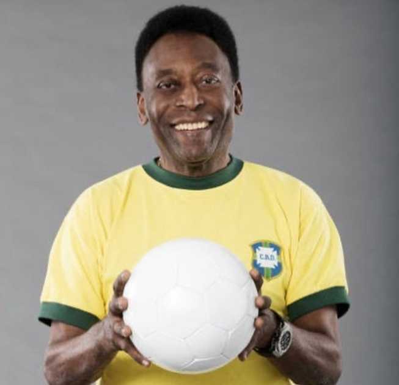
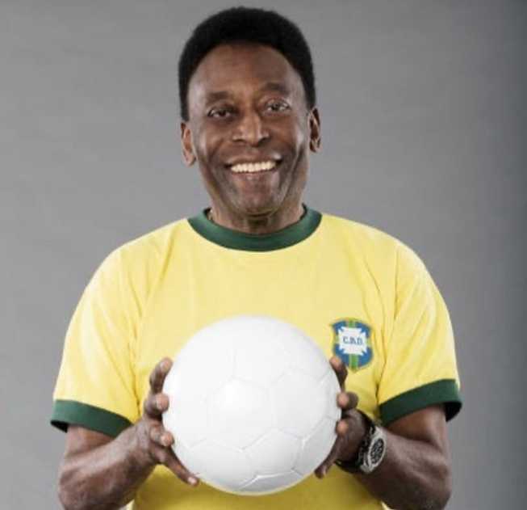

Edson Arantes do Nascimento[4] (Três Corações, 23 de outubro de 1940), mais conhecido como Pelé, é um ex-futebolista brasileiro que atuava como atacante. Ele é amplamente considerado como um dos maiores atletas de todos os tempos.[5] Em 2000, ele foi eleito Jogador do Século pela Federação Internacional de História e Estatísticas do Futebol (IFFHS) e foi um dos dois vencedores conjuntos do prêmio Melhor Jogador do Século da FIFA.
Pelé começou a jogar pelo Santos Futebol Clube aos quinze anos e pela Seleção Brasileira de Futebol aos dezesseis. Durante sua carreira na seleção, ele ganhou três Copas do Mundo da FIFA: 1958, 1962 e 1970, sendo o único jogador a fazê-lo. Ele também é o maior goleador da história da seleção brasileira, com 77 gols em 92 jogos. Em clubes, ele é o maior artilheiro da história do Santos e os levou a várias conquistas, com destaque para duas Copas Libertadores da América e dois Mundiais Interclubes, vencidos em 1962 e 1963.
Com média de quase um gol por jogo ao longo de sua carreira, Pelé era especialista em chutar a bola com qualquer dos pés, além de antecipar os movimentos de seus oponentes em campo. Embora predominantemente atacante, ele também podia se aprofundar e assumir um papel de playmaker, fornecendo assistências com sua visão e habilidade de passe; ele também usava suas habilidades de drible para ultrapassar os adversários. No Brasil, é aclamado como herói nacional por suas realizações no futebol e por seu apoio franco a políticas que melhoram as condições sociais dos pobres.
 
